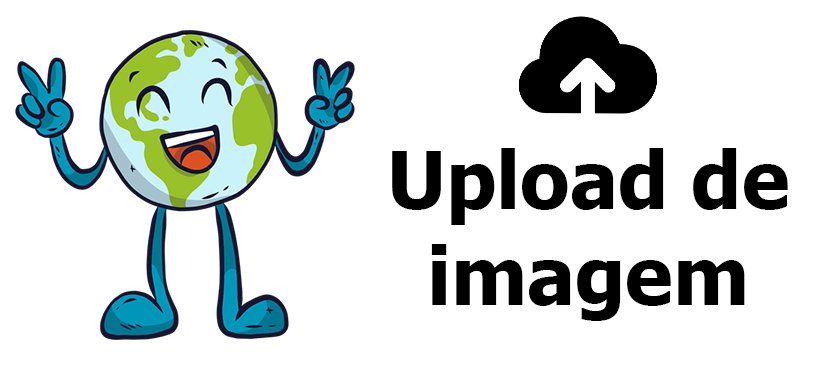

<ion-header >
    <ion-toolbar style="--background:#F0F8FF">
        <ion-title class="textomeu" style="color: #18d44d">Meu <a class="diariotext" >Diário</a></ion-title>
    </ion-toolbar>
</ion-header>

<ion-content class="corfundo">
    <ion-refresher
        slot="fixed"
        (ionRefresh)="doRefresh($event)"
    >
        <ion-refresher-content></ion-refresher-content>
    </ion-refresher>

    <ion-searchbar (ionInput)="getItems($event)"></ion-searchbar>

    <ion-list class="aloalo">
        <div class= "card">
        <ion-card
            class="corCard"
            *ngFor="let diario of diarioItem"
        >
            
           
                <ion-card-title class="titulodiario">{{diario.tituloDiario}}</ion-card-title>
          
            <h4 class="conteudoDiario">{{diario.conteudoDiario}}</h4>
            <h6 class="dataDiario">{{diario.dataDiario}}</h6>
           <p class="chipopcoes">
                    <ion-chip  color="secondary" (click)="editDiario(diario)">
                        <ion-icon
                            name="create"
                            color="secondary"
                        >
                            
                        </ion-icon>
                    </ion-chip>
               
                <ion-chip color="danger" (click)="deleteDiario(diario)">
                    <ion-icon
                        name="trash"
                        color="danger"
                    >
                        
                    </ion-icon>
                </ion-chip>
            </p>
        </ion-card>
    </div>
    </ion-list>
</ion-content>

<ion-fab
    class="botaomais"
    vertical="center"
    horizontal="end"
    slot="fixed"
   
>
<ion-fab-button  color="primary" (click)="RotaCadastrarDiario()">
        <ion-icon style="background:#18d44d" name="add"></ion-icon>
    </ion-fab-button>
</ion-fab>


<ion-tab-bar slot="bottom">

        <ion-tab-button (click)="RotaHome()">
            <ion-icon style="color:#18d44d" name="home"></ion-icon>
            
        </ion-tab-button>
    
        <ion-tab-button (click)="RotaPost()">
            <ion-icon style="color:#18d44d" name="paper"></ion-icon>
           
        </ion-tab-button>
    
        <ion-tab-button (click)="RotaDiario()">
            <ion-icon style="color:#18d44d" name="journal"></ion-icon>
            
        </ion-tab-button>
    
        <ion-tab-button (click)="RotaChat()">
            <ion-icon style="color:#18d44d" name="chatboxes"></ion-icon>
            
        </ion-tab-button>
    
        <ion-tab-button (click)="RotaPerfil()">
            <ion-icon style="color:#18d44d" name="contact"></ion-icon>
            
        </ion-tab-button>
    
    </ion-tab-bar>
